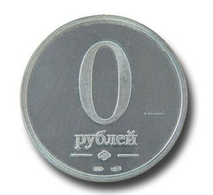
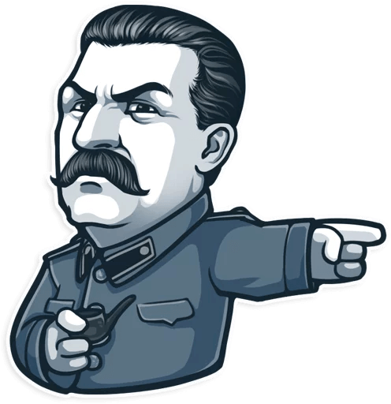
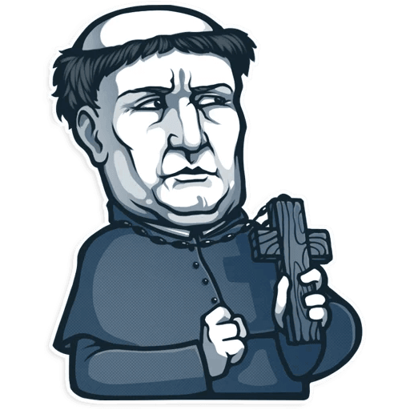
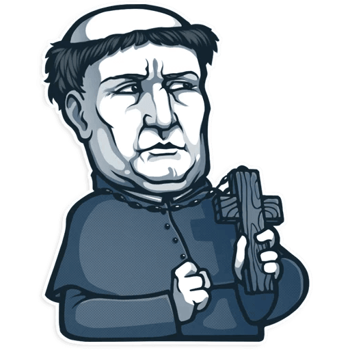

Почему Telegram?
 Мессенджеры в массе своей выросли из SMS. И так же как сотовый телефон из обычного мобильного средства связи со временем заменил ноутбук, мессенджеры сейчас превращаются в самостоятельный и дорогой продукт.
Мессенджеры в массе своей выросли из SMS. И так же как сотовый телефон из обычного мобильного средства связи со временем заменил ноутбук, мессенджеры сейчас превращаются в самостоятельный и дорогой продукт.
Боты – новые приложения
Найти билеты на поезд, озвучить набранный текст, моментально отыскать гифку в базе анимированных картинок, поиграть в виселицу, показать близлежащие заведения по указанной тематике — это далеко не полный перечень функций, выполняемых ботами. Дуров обеспечил простое и понятное разделение. Список официальных ботов можно посмотреть переходя по ссылке, это далеко не полный список ботов. Есть масса других ботов созданных умельцами
Цифровая крепость
Проект создан Павлом Дуровым, основателем социальной сети «ВКонтакте». В интервью The New York Times Павел рассказал, что первоначальная идея приложения пришла ему ещё в 2011-м, когда к его двери приходили спецназовцы. Когда последние всё-таки ушли, Дуров сразу же написал своему брату Николаю. Тогда же он и осознал, что у него нет безопасного способа коммуникации с братом. Сервис построен на технологии шифрования переписки MTProto, разработанной братом Павла — Николаем. Сам «Телеграм» изначально был экспериментом принадлежащей Павлу компании Digital Fortress с целью протестировать MTProto на больших нагрузках.
Качество и бесплатность
Основатель и гендиректор WhatsApp Ян Кум ещё в 2013 году почувствовал угрозу: "Павел Дуров умеет только копировать такие продукты как Facebook и WhatsApp. У него никогда не было и не будет оригинальных идей". Идеолог и основатель Telegram ответил в своём стиле: "Планов пересаживать бабушек с WhatsApp нет. Конечная цель — мессенджер с развитыми социальными/геолокационными функциями. Telegram — промежуточный продукт, хотя он понравится тем, кто любит качество". Про качество стоит поговорить отдельно. С первых дней мессенджер Дурова обыгрывал WhatsApp сразу по нескольким параметрам. Главные из них: поддержка огромных чатов (изначально до 200 человек, сейчас до 5000), прикрепление гигантских файлов (до гигабайта), встроенный поиск по изображениям и высокая скорость: фотографии в Telegram доходили ощутимо быстрее, чем у зелёного конкурента. Ещё один ключевой фактор: Ян Кум просил за использование мессенджера один доллар в год, а Дуров не просил ничего.
Стикеры
Набор стикеров в Telegram появится после ввода какого-либо эмодзи (как эмоционального, так и идеограммы, например, с животным). Над смайлом всплывёт меню со списком стикеров, которые подходят ему по эмоции или смыслу. При этом для каждого эмодзи возможен неограниченный набор стикеров. Кроме этого стикеры располагаются в своем обычном месте, рядом со смайликами. Глава Telegram Павел Дуров запустил на сайте FL.ru открытый конкурс по разработке набора стикеров для своего мессенджера. Поэтому умельцы разрабатывают свои наборы стикеров. Множество стикеров разной тематики можно найти по ссылке.

 
